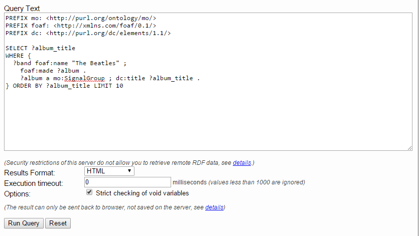
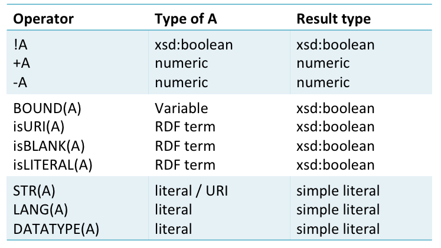
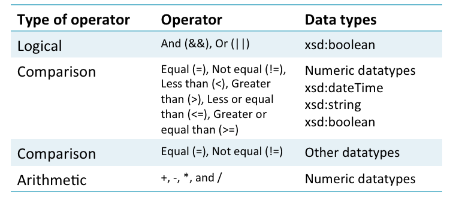
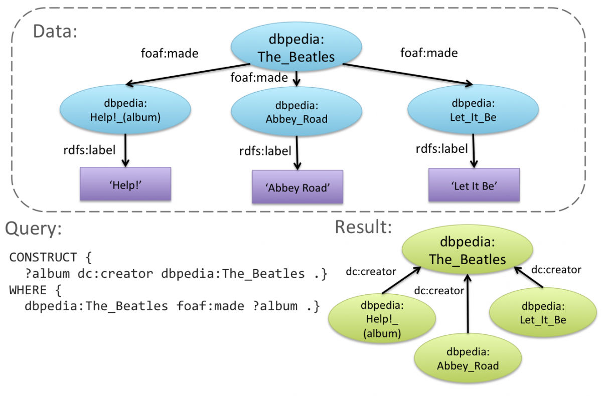

In developing an application , you will need to build queries into your application code. There are APIs that help you to do this, like the ones provided by LinkedData.Center. However, before learning to use APIs, you can learn the syntax for queries (and their responses) by using an interactive SPARQL endpoint web application to enter the query by hand.
As an example of this procedure Figure shows a snapshot of the LinkedBrainz endpoint at http://linkedbrainz.org/sparql with a query about the albums made by the Beatles.

Figure 3: Typing a query into a SPARQL endpoint
If you type in this query and hit the "Run Query" button you will obtain a table giving values for the variable ?album_title:
| album_title |
|---|
| "'69 Rehearsals"^^<http://www.w3.org/2001/XMLSchema#string> |
| "'Quote' Unquote: The Sixties Interviews"^^<http://www.w3.org/2001/XMLSchema#string> |
| "1"^^<http://www.w3.org/2001/XMLSchema#string> |
| "16 Superhits, Volume 1"^^<http://www.w3.org/2001/XMLSchema#string> |
| "16 Superhits, Volume 2"^^<http://www.w3.org/2001/XMLSchema#string> |
| "16 Superhits, Volume 3"^^<http://www.w3.org/2001/XMLSchema#string> |
| "16 Superhits, Volume 4"^^<http://www.w3.org/2001/XMLSchema#string> |
| "1962 Live Recordings"^^<http://www.w3.org/2001/XMLSchema#string> |
| "1962 Live at Star Club in Hamburg"^^<http://www.w3.org/2001/XMLSchema#string> |
| "1962-1970"^^<http://www.w3.org/2001/XMLSchema#string> |
Please note that the clause LIMIT 10 in the SPARQL query limits ther results to the first ten solutions that match the "WHERE" clause portion.
It is always a good idea to limit the number of the results in a SPARQL query, because some time returned solution can be really a lot. ORDER BY, LIMIT and OFFSET constructs, like in SQL, help you in paginating results.
SPARQL defines the following query types for data retrieval:
An ASK query corresponds intuitively to a Yes/No question in conversational language. For example, the following query corresponds to the Yes/No question "Is "All You Need Is Love" a song recorded by the Beatles?":
PREFIX dbpedia: <http://dbpedia.org/resource/>
PREFIX foaf: <http://xmlns.com/foaf/0.1/>
PREFIX mo: <http://purl.org/ontology/mo/>
PREFIX dc: <http://purl.org/dc/elements/1.1/>
PREFIX xsd: <http://www.w3.org/2001/XMLSchema#>
ASK
WHERE {
?band foaf:name "The Beatles" ; foaf:made [
a mo:Track ; dc:title "All You Need Is Love"^^xsd:string
].
}
If this query is submitted as described above, the answer given will be "true".
Dissecting the syntax of this query, we note the following:
If you want to ask whether there are any X, Y, etc. such that certain conditions hold – e.g., "Are there any X such that X was made by the Beatles" – you need to use RDF patterns, which are like triples except that they contain variables. These are represented by names beginning with a question mark '?', as in this example:
PREFIX dbpedia: <http://dbpedia.org/resource/>
PREFIX foaf: <http://xmlns.com/foaf/0.1/>
PREFIX mo: <http://purl.org/ontology/mo/>
PREFIX dc: <http://purl.org/dc/elements/1.1/>
ASK
WHERE { ?band foaf:name "The Beatles" ; foaf:made ?something }
To show the basic syntax of a SELECT query, let us return to the example given in section 2.3:
PREFIX dbpedia: <http://dbpedia.org/resource/>
PREFIX foaf: <http://xmlns.com/foaf/0.1/>
PREFIX mo: <http://purl.org/ontology/mo/>
SELECT ?album
WHERE { ?band foaf:name "The Beatles" ; foaf:made ?album .
?album a mo:SignalGroup
}
Note the following:
Try running the query in the interactive linkedbrainz endpoint. You should obtain in response a list of URIs that use arbitrary codes rather than recognisable words.
For some queries you might want the results to be presented in a particular order. For instance, if your music portal retrieves albums made by the Beatles, using the query given above, you might want to present these in alphabetical order of title. This can be done using the keywords ORDER BY, as in the following example:
PREFIX dbpedia: <http://dbpedia.org/resource/>
PREFIX foaf: <http://xmlns.com/foaf/0.1/>
PREFIX mo: <http://purl.org/ontology/mo/>
PREFIX dc: <http://purl.org/dc/elements/1.1/>
SELECT *
WHERE { ?band foaf:name "The Beatles" ; foaf:made ?album .
?album a mo:SignalGroup .
?album dc:title ?title
}
ORDER BY ?title
The key element in this query is the ORDER BY component at the end, which stipulates that rows should be presented in alphabetical order of the values in the ?title column. Note also one other change from the previous example, the use of the asterisk shorthand in the SELECT clause, which asks for all variables in the WHERE clause to be tabulated. This shorthand is not always used, since often the selected variables are a strict subset of those mentioned in the WHERE clause.
Try replacing ORDER BY ?title by ORDER BY DESC(?title), which will present the rows in descending rather than ascending order of title (i.e., ascending is the default).
What exactly do these tables show? The columns, as we have seen, correspond to variables in the query for which tabulation is requested after SELECT, either explicitly by name, or implicitly by the '*' option. The rows give all variable bindings that match the graph pattern in the WHERE clause. A binding is an assignment of identifiers or literals to the variables which, when instantiated in these patterns, will yield a subgraph of the dataset. Note that when computing these bindings, the query engine makes the key assumption that variables occurring in more than one pattern are bound to the same resource. In this way it avoids returning a row in which an album is paired with the title of a different album.
For some queries, including our example, the output table returns too many result at once. In such cases it would be useful if the music portal included a paging facility allowing users to view the information in manageable portions – perhaps ten rows at a time. This can be done through the query engine if you use the keywords LIMIT and OFFSET. To see how this works, trying extending our previous query as follows:
PREFIX dbpedia: <http://dbpedia.org/resource/>
PREFIX foaf: <http://xmlns.com/foaf/0.1/>
PREFIX mo: <http://purl.org/ontology/mo/>
PREFIX dc: <http://purl.org/dc/elements/1.1/>
SELECT *
WHERE { ?band foaf:name "The Beatles" ; foaf:made ?album .
?album a mo:SignalGroup .
?album dc:title ?title
}
ORDER BY ?title
LIMIT 10 OFFSET 0
You should get back the same table, but cut off after the first ten rows; the result will be the same if you just put LIMIT 10 leaving the offset unspecified. Now try raising the number after OFFSET to 10. You should get back the next ten-row segment of the table, covering rows 11-20. In general, if LIMIT is L and OFFSET is S, the query will return L rows starting at S+1 and continuing up to S+L.
We have seen queries in which the WHERE clause contains specific resources (the Beatles) or variables (?album). But what if we want to obtain results for any variable that satisfies a certain condition – e.g., albums beginning with the letter 'B', or band members born before 1960?
Such conditions are called "filters", and to illustrate them, let us switch to an example in which our aim is to retrieve tracks (not albums) with a duration between 300 and 400 seconds. Since in MusicBrainz durations are encoded in milliseconds, the relevant filter condition can be stated as follows:
PREFIX foaf: <http://xmlns.com/foaf/0.1/>
PREFIX mo: <http://purl.org/ontology/mo/>
PREFIX dc: <http://purl.org/dc/elements/1.1/>
SELECT ?title ?duration
WHERE { ?band foaf:name "The Beatles" ; foaf:made ?track .
?track a mo:Track .
?track dc:title ?title .
?track mo:duration ?duration .
FILTER (?duration>=300000 && ?duration<=400000)
}
ORDER BY ?duration
LIMIT 10
The tables in Figures 5 and 6 show some other operators from which filter conditions can be constructed. Both tables are taken from the W3C specification at http://www.w3.org/TR/rdf-sparql-query/, which can be consulted for further details.
Conceptually, filters define a boolean condition on a graph pattern binding. We have already seen that the graph pattern in a WHERE clause has a set of solutions, each corresponding to a binding of the variables mentioned in the graph pattern. The filter submits these solutions to a boolean condition, letting through only those variable bindings for which the condition is met. In a naive implementation, the projection would be computed in just this way: first find the set of solutions matching the graph pattern; then select from this set the solutions that satisfy the filter condition, for inclusion in the final result.

Figure 5: Unary operators for filter expressions

Figure 6: Binary operators for filter expressions
For some queries you may find that the output table has duplicated rows. The reason for this is usually that the selected (tabulated) variables are a strict subset of the variables in the graph pattern. Consider for instance the following table , which you will see if you submit the previous query :
| title | duration |
|---|---|
| "All You Need Is Love"^^<http://www.w3.org/2001/XMLSchema#string> | "300000"^^<http://www.w3.org/2001/XMLSchema#int> |
| "All You Need Is Love (live on "Our World" TV Show: 1967-06-25)"^^<http://www.w3.org/2001/XMLSchema#string> | "300293"^^<http://www.w3.org/2001/XMLSchema#int> |
| "All You Need Is Love (live on "Our World" TV Show: 1967-06-25)"^^<http://www.w3.org/2001/XMLSchema#string> | "300293"^^<http://www.w3.org/2001/XMLSchema#int> |
| "Misery"^^<http://www.w3.org/2001/XMLSchema#string> | "300666"^^<http://www.w3.org/2001/XMLSchema#int> |
| "[improvisation 5]"^^<http://www.w3.org/2001/XMLSchema#string> | "301080"^^<http://www.w3.org/2001/XMLSchema#int> |
| "Hey Jude"^^<http://www.w3.org/2001/XMLSchema#string> | "302040"^^<http://www.w3.org/2001/XMLSchema#int> |
| "I Lost My Little Girl"^^<http://www.w3.org/2001/XMLSchema#string> | "302666"^^<http://www.w3.org/2001/XMLSchema#int> |
| "Ride Rajbun"^^<http://www.w3.org/2001/XMLSchema#string> | "302666"^^<http://www.w3.org/2001/XMLSchema#int> |
| "February 10, 1964"^^<http://www.w3.org/2001/XMLSchema#string> | "302826"^^<http://www.w3.org/2001/XMLSchema#int> |
| "[Think for Yourself studio chatter]"^^<http://www.w3.org/2001/XMLSchema#string> | "303000"^^<http://www.w3.org/2001/XMLSchema#int> |
In the begin of this table we find two rows with track title "All You Need Is Love (live on "Our World" TV Show: 1967-06-25)" and duration 300293; and there are many more examples further down the table. This happens because there might be multiple resources instantiating ?track having the same values for ?title and ?duration. Here, for example, the track "All You Need Is Love (live on "Our World" TV Show: 1967-06-25)" is present in two different albums, so it shows up twice. If all three variables were tabulated, the rows would differ in the ?track column, but since this column is not requested, we obtain rows that appear identical. To avoid this you can include the keyword DISTINCT in the SELECT clause, as follows:
PREFIX foaf: <http://xmlns.com/foaf/0.1/>
PREFIX mo: <http://purl.org/ontology/mo/>
PREFIX dc: <http://purl.org/dc/elements/1.1/>
SELECT DISTINCT ?title ?duration
WHERE { ?band foaf:name "The Beatles" ; foaf:made ?track .
?track a mo:Track .
?track dc:title ?title .
?track mo:duration ?duration .
FILTER (?duration>300000 && ?duration<400000)
}
ORDER BY ?duration LIMIT 10
The output table, you should now find only one row pairing "All You Need Is Love (live on "Our World" TV Show: 1967-06-25)" with 300293.
Since DISTINCT is computationally expensive there is an efficient alternative REDUCED which eliminates some duplicates but not necessarily all (e.g., it fails to eliminate the duplication of "Within You Without You" mentioned above); however, DISTINCT is more widely used, and should not be computationally expensive when ORDER BY is also used.
Suppose that the dataset contains triples specifying the tracks on each album, and associating a duration in milliseconds with each track, represented by an integer literal. (In fact the MusicBrainz dataset associates records with albums, and tracks with records, which complicates the query slightly – see below.) Fully listed this is a lot of data, and you might wish instead to report, for each album, the total duration obtained by summing the durations of the tracks. This is an example of aggregate data, and it requires two operations: first, we must segment the variable bindings into groups, corresponding in this case to all bindings relating to a given album; second, for each group, we must submit the values of a specified variable to an aggegation function – in this case, sum the track durations.
For instance, suppose the dataset has just two albums matching the query, namely Revolver and Abbey Road; and suppose that for Revolver just three tracks are included, namely "Eleanor Rigby", "I'm only sleeping", and "Doctor Robert", with durations respectively of 200000, 240000, and 160000 milliseconds. (These are just round numbers made up for the example.) This will mean that for Revolver we have three bindings of the variables ?album, ?track, and ?track_duration; and if Abbey Road has four specified tracks, it will correspondingly have four bindings. We now separate the bindings into groups – three for Revolver, four for Abbey Road – and within each group we want to sum the track durations, and return only a table that gives albums along with their total durations. This will mean that the first row of the table will specify Revolver in the ?album column, and 600000 in the second column for which we need a new name – perhaps ?album_duration.
Here is a query that achieves this result. In addition it imposes a condition on the total duration of the album, reporting only albums with duration exceeding 3600000 milliseconds (i.e., one hour), selecting (and hence grouping by) album title rather than album.
PREFIX foaf: <http://xmlns.com/foaf/0.1/>
PREFIX mo: <http://purl.org/ontology/mo/>
SELECT ?album_title (SUM(?track_duration) AS ?album_duration)
WHERE { ?album mo:record ?record .
?album dc:title ?album_title .
?record mo:track ?track .
?band foaf:name "The Beatles" ; foaf:made ?track .
?track mo:duration ?track_duration .
}
GROUP BY ?album_title
HAVING (SUM(?track_duration) > 3600000)
ORDER BY ?album_duration
LIMIT 10
Note two new keywords here: AS introducing a variable name for the sum of durations (this becomes the heading of the second column of the output table); and HAVING introducing a filter over the group of variable bindings that has just been specified by the GROUP BY component.
When building an application, you might need to retrieve some information from a queried dataset and re-express it in new RDF triples, perhaps using new names for resources. This might, for example, allow more efficient integration with triples from another dataset.
To meet this need, SPARQL provides a CONSTRUCT query which uses information retrieved from a dataset in order to build new RDF statements. Note that the query does not update the dataset. The new RDF triples are returned to the user as output, to be used in any way desired, the dataset itself remaining unchanged. (In SPARQL 1.1 there are query types for updating a dataset, as described in a later section of this chapter.)
To show the basic syntax of a CONSTRUCT query, consider the following example where the user wishes to assert "creator" relationships between artists and their products – of any kind; perhaps the aim is to construct a dataset in which this predicate is used consistently, replacing more specific predicates in MusicBrainz.
PREFIX foaf: <http://xmlns.com/foaf/0.1/>
PREFIX dc: <http://purl.org/dc/elements/1.1/>
PREFIX mo: <http://purl.org/ontology/mo/>
CONSTRUCT { ?album dc:creator ?band .
?track dc:creator ?band .
}
WHERE { ?band foaf:name "The Beatles" ; foaf:made ?album .
?album mo:record ?record .
?record mo:track ?track .
}
The key to understanding this query is that the variables employed in the CONSTRUCT list must occur also in the WHERE list. When the query is run, the query engine begins by retrieving the variable bindings satisfying the description in the WHERE list – just as it would for a SELECT query. For each variable binding, it then instantiates the triple patterns in the CONSTRUCT list and so creates (in this case two) new RDF triples. The result of the query is a merged graph including all the created triples.
Figure 8 shows this outcome diagrammatically for an even simpler CONSTRUCT query, with the relevant part of the dataset and the constructed triples both shown as graphs.

Figure 8: Result of a simple CONSTRUCT query
When building new RDF triples with CONSTRUCT, you can use the operators described in section 2.4.4 in order to organise and delimit the variable bindings retrieved from the dataset. The following query will build "creator" relationships only for the first 10 albums recorded by the Beatles, following alphabetical order of the titles, along with their tracks:
PREFIX foaf: <http://xmlns.com/foaf/0.1/>
PREFIX dc: <http://purl.org/dc/elements/1.1/>
PREFIX mo: <http://purl.org/ontology/mo/>
CONSTRUCT { ?album dc:creator ?band .
?track dc:creator ?band .
}
WHERE { ?band foaf:name "The Beatles" ; foaf:made ?album .
?album mo:record ?record .
?album dc:title ?album_title .
?record mo:track ?track .
}
ORDER BY ?album_title
LIMIT 10
Suppose that for some reason you want to construct triples for albums made either by the Beatles or by the Smashing Pumpkins (or both). Including both of these constraints in the WHERE list will not work, because implicitly the list represents a conjunction of statements, each of which must be satisfied. To allow disjunctions, SPARQL contains a UNION pattern; this is formed by placing the keyword UNION between two subsets of statements, each subset delimited by curly brackets. The meaning is that variable bindings should be retrieved if they satisfy either the statements on the left or the statements on the right (or both). Thus our target query is formed as follows:
PREFIX foaf: <http://xmlns.com/foaf/0.1/>
PREFIX dc: <http://purl.org/dc/elements/1.1/>
PREFIX mo: <http://purl.org/ontology/mo/>
CONSTRUCT { ?album dc:creator ?band .
?track dc:creator ?band .
}
WHERE { ?band foaf:made ?album .
?album mo:record ?record .
?record mo:track ?track .
{ ?band foaf:name "The Beatles" }
UNION
{ ?band foaf:name "The Smashing Pumpkins" }
}
Note that the first three statements of the WHERE list lie outside the scope of the UNION operator.
In the examples we have seen so far, variable bindings must be retrieved for all patterns listed after WHERE. This means that if we retrieve several facts about an album (say), the album will only be included in the output if all these facts are presented in the dataset: if just one is missing, the others will be ignored. SPARQL deals with this problem by allowing any graph pattern in the list to be preceded by the keyword OPTIONAL. This means that when computing variable bindings, the query engine should accept incomplete bindings provided that the unspecified variables occur only in optional patterns.
In the following query, optional patterns are used ingeniously to select only variable bindings for which a particular variable is not bound. The variable in question records an artist's place of death, and it is assumed that if this information is missing from the dataset, the artist will still be alive. If variables in the CONSTRUCT clause are not bound in the OPTIONAL clause, the triple patterns with these variables are not generated. As a result, "creator" relationships are constructed only for artists who are alive (or more precisely, artists for whom there is no death place recorded in the dataset).
PREFIX dbont: <http://dbpedia.org/ontology/>
PREFIX foaf: <http://xmlns.com/foaf/0.1/>
PREFIX dc: <http://purl.org/dc/elements/1.1/>
CONSTRUCT { ?album dc:creator ?artist . }
WHERE { ?artist foaf:made ?album .
OPTIONAL { ?artist dbont:deathPlace ?place_of_death }
FILTER (!BOUND(?place_of_death))
} LIMIT 10
Note that in the filter expression '!' denotes negation, so that the whole expression means that the variable is not bound.
You should take care using this kind of query, since it depends on a risky inference sometimes called the closed-world assumption – namely, that any relevant statement not found in the dataset must be false. Thus if the dataset contains information about places of death, but no statement giving the place of death of Paul McCartney, we infer by this assumption that Paul McCartney must still be alive, since otherwise his place of death would have been recorded.
If you want to construct RDF triples using a variable that is derived from retrieved data, e.g., through an arithmetical operation, you can add a BIND statement to the WHERE clause as follows:
PREFIX foaf: <http://xmlns.com/foaf/0.1/>
PREFIX mo: <http://purl.org/ontology/mo/>
CONSTRUCT { ?track mo:runtime ?secs }
WHERE { ?band foaf:name "The Beatles" ; foaf:made ?album .
?album mo:record ?record .
?record mo:track ?track .
?track mo:duration ?duration .
BIND ((?duration/1000) AS ?secs) .
} LIMIT 10
In this way the object of mo:runtime will be given in seconds rather than milliseconds.
We have already discussed a SELECT query that returns aggregate data by summing the durations of tracks in each album. You may recall that such a query uses the AS keyword in the expression following SELECT, to introduce a variable name for the aggregate value – in this case, the album duration. In the context of a CONSTRUCT query we therefore have a problem: how to introduce this new variable for the aggregate?
The solution used in SPARQL is to allow a sub-query after the keyword WHERE, in place of the usual graph pattern. This is achieved by the following rather convoluted syntax:
PREFIX foaf: <http://xmlns.com/foaf/0.1/>
PREFIX mo: <http://purl.org/ontology/mo/>
CONSTRUCT { ?album mo:duration ?album_duration }
WHERE {
SELECT ?album (SUM(?track_duration) AS ?album_duration)
{ ?band foaf:name "The Beatles" ; foaf:made ?album .
?album mo:record ?record .
?record mo:track ?track .
?track mo:duration ?track_duration .
} GROUP BY ?album
HAVING (SUM(?track_duration) > 3600000)
} LIMIT 10
Like CONSTRUCT, DESCRIBE delivers as output an RDF graph – i.e., a set of RDF triples. It differs from CONSTRUCT in that these triples are not constructed according to a template, but returned as found in the dataset. The reasons for doing this are similar to those for CONSTRUCT – you might, for instance, want to add these triples to another dataset – but you would prefer DESCRIBE if you were satisfied with the original encoding and had no reason to re-express the information using different resource names.
Resources can be specified more generically as bindings to a variable. Thus the following query requests all triples that mention for an album.
PREFIX mo: <http://purl.org/ontology/mo/>
DESCRIBE ?track WHERE { ?track a mo:Track } LIMIT 1